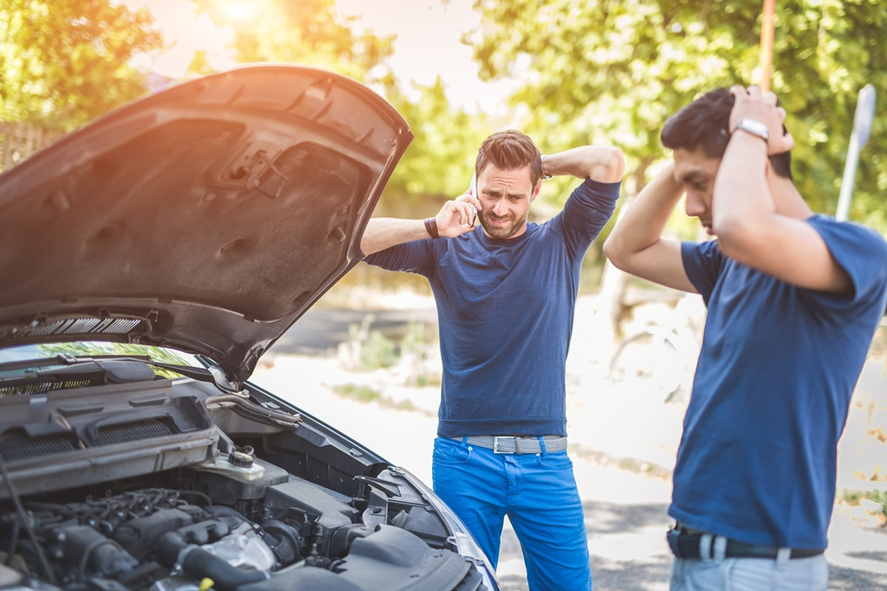
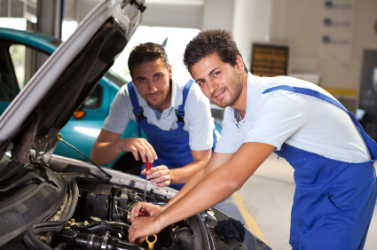

<div class="row" style="padding: 100px 400px 0px 400px;">
        <!-- Card -->
        <div class="card">
<!-- <div class="row" style="padding: 100px 400px 0px 400px;">
        Card -->
        <!-- <div class="card">
                <h4 class="card-title" style="font-weight: bold;"><a>Emergency services</a></h4>
            
            <div align="center" class="card-body">
<h4 class="card-title" style="font-weight: bold;"><a>Emergency services</a></h4>
            <h4 class="card-title" style="font-weight: bold;"><a>Non-Emergency services</a></h4>
            
            <li> to provide vehicle drivers and mechanics/service centers with a platform to contact each other during non-emergency situations.Bridge the gap between the customer and the service provider and make those services efficient and effective. </li>

         -->
<div class="row" style="margin-top:50px; padding-right: 50px;">
    <div class="col-8">
        <h2 style="padding-top: 100px; padding-left:40px;">FIND A <span>MECHANIC FROM</span> WHERE YOU ARE</h2>
        <p class="content" style="font-size: 20px; padding-top: 10px;">
            One of the most common issues a person can face while travelling is a Vehicle breakdown. Let’s assume that you are stuck on a lesser travelled road and the nearest civilians are miles away. Most people find it difficult to get roadside assistance in such emergency cases. The situation becomes worse when vehicle owners have to rely on an unknown person. Keeping a detailed record of all repairs, maintenance, and inspection is an essential duty of a vehicle owner. It enhances operator safety, increases its resale value, prevents unnecessary expensive repairs and helps to keep your vehicle in good condition. But recording and maintaining these records manually is a hassle process. So the vehicle owners favour finding an automated system to overcome these issues.
                  
        </p>
    </div>

    <div class="col-4">
        
    </div>
    <div class="row" style="margin-top:50px; padding-right: 50px;">
        <div class="col-8">
            <h2 style="padding-top: 100px; padding-left:40px;">FIND A <span>MECHANIC AND</span> SERVICE CENTER</h2>
            <p class="content" style="font-size: 20px; padding-top: 10px;">
                The purpose of this system is to bridge the communication gap between the driver who is in need of service and the mechanic/service center. A driver can easily find the service provider in a nearby location and contact them to obtain the service through the system. Therefore in case of emergency in unknown roads, drivers can manage
                to contact the mechanics easily through our system.

            </p>
        </div>
    
        <div class="col-4">
            
        </div>
       
        
    


                <!-- <div class="container-fluid" align="right">
                        
                        <p style="font-size: 50px;">From oil changes to transmission replacements, find the best & nearest mechanic for your requirement</p>
                </div> -->
</div> 

 


